"Habitar y saborear el
barrio prado medellín"
habisori es un proyecto que busca resignificar la percepción del barrio prado medellín a través de experiencias que integran arquitectura, cultura y gastronomía.
HABISORI
HABISORI nace de la unión entre habitar y saborear, entendiendo el Barrio Prado Medellín como un territorio que puede volver a ser recorrido, vivido y experimentado desde la arquitectura, la cultura y la gastronomía.
El proyecto busca visibilizar aquellos espacios del barrio que hoy ofrecen nuevas formas de habitar el patrimonio, reconociendo casas y lugares donde surgen experiencias culturales, artísticas y gastronómicas que resignifican el territorio.
A través del análisis de distintas casas patrimoniales y sus transformaciones, HABISORI construye una narrativa visual y experiencial inspirada en elementos arquitectónicos del barrio como rejas, arcos, ventanas, cerámicas y detalles ornamentales.


EMPATIZAR
Investigación: problema, audiencia y contexto
El Barrio Prado Medellín, reconocido por su valor histórico y arquitectónico, ha atravesado diferentes transformaciones urbanas y sociales que han afectado la relación de las personas con el territorio. El abandono progresivo de muchas viviendas patrimoniales, el deterioro del espacio público, la inseguridad y la presencia de problemáticas sociales han contribuido al desgaste físico y social del barrio, debilitando la apropiación y permanencia dentro del sector.
A pesar de estas problemáticas, Prado continúa conservando una importante riqueza cultural, arquitectónica y patrimonial. Actualmente, diferentes espacios culturales, gastronómicos y artísticos han comenzado a resignificar algunas casas patrimoniales mediante nuevas dinámicas que permiten recorrer y habitar el barrio desde otras experiencias.
Sin embargo, muchas de estas propuestas aún se perciben poco visibles o desconectadas de la ciudadanía, generando que gran parte de las personas desconozcan lo que sucede dentro de estos espacios. Frente a este contexto, el proyecto identifica la oportunidad de acercar nuevamente a las personas al Barrio Prado Medellín mediante experiencias culturales, visuales y territoriales que permitan descubrir aquello que muchas veces permanece oculto detrás de sus fachadas.
Comprender Prado implicó reconocer que el patrimonio no solo se conserva observándolo, sino también recorriéndolo, habitándolo y permitiendo que nuevas experiencias continúen dando vida al territorio.
Problemas vs. Oportunidades
Transformar la percepción del Barrio Prado a través de experiencias inmersivas que integren arquitectura, cultura y gastronomía, incentivando su visita y reactivación urbana.
Reactivar casas patrimoniales del Barrio Prado mediante su transformación en espacios habitados que integren gastronomía, cultura y arquitectura.
Dinamizar el Barrio Prado mediante eventos temporales que integren cultura, gastronomía y arquitectura.
Visibilizar y resignificar el Barrio Prado a través de un producto editorial que integre arquitectura, cultura y gastronomía desde una narrativa visual y experiencial.
A partir del análisis del contexto y de los hallazgos obtenidos durante la investigación, se identificaron diferentes problemáticas presentes en el Barrio Prado Medellín, como la inseguridad, el deterioro urbano, el riesgo de gentrificación y el poco interés de la ciudadanía por recorrer y habitar el sector.
Dentro de estas problemáticas, los cuadros resaltados en color rosa corresponden al enfoque principal seleccionado para el proyecto, centrado en el poco interés hacia el barrio y la desconexión existente entre las personas y las experiencias culturales, gastronómicas y patrimoniales.
Como respuesta comenzaron a desarrollarse diferentes propuestas de diseño y elementos visuales inspirados en la arquitectura patrimonial de Prado, buscando construir una experiencia que conectara la arquitectura, la cultura y la gastronomía como nuevas formas de habitar el territorio.
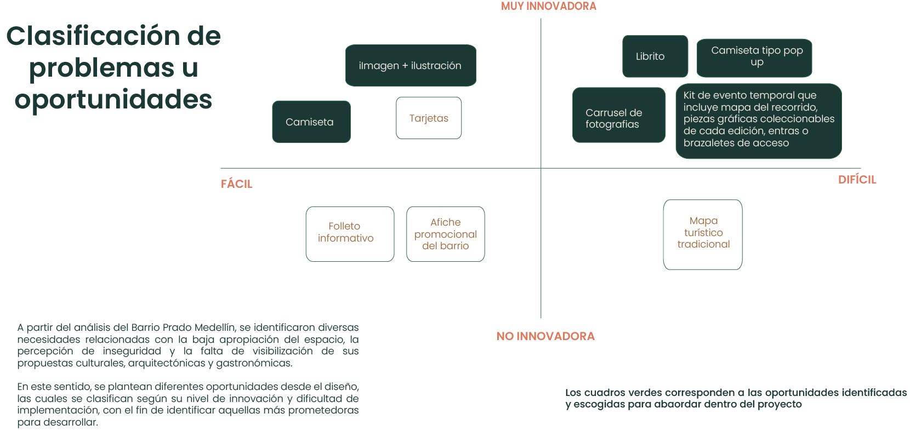
Clasificación
Problemas y oportunidades del territorio
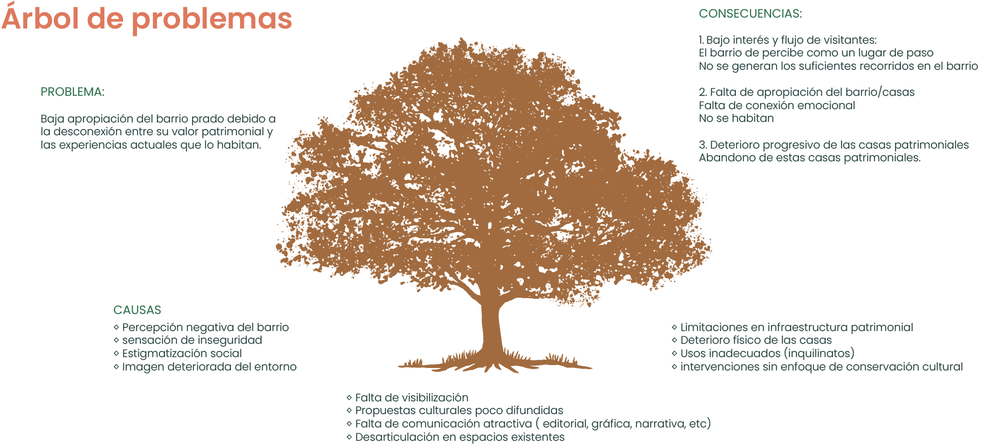
Árbol de problemas
Relaciones entre causas y consecuencias
Entrevista
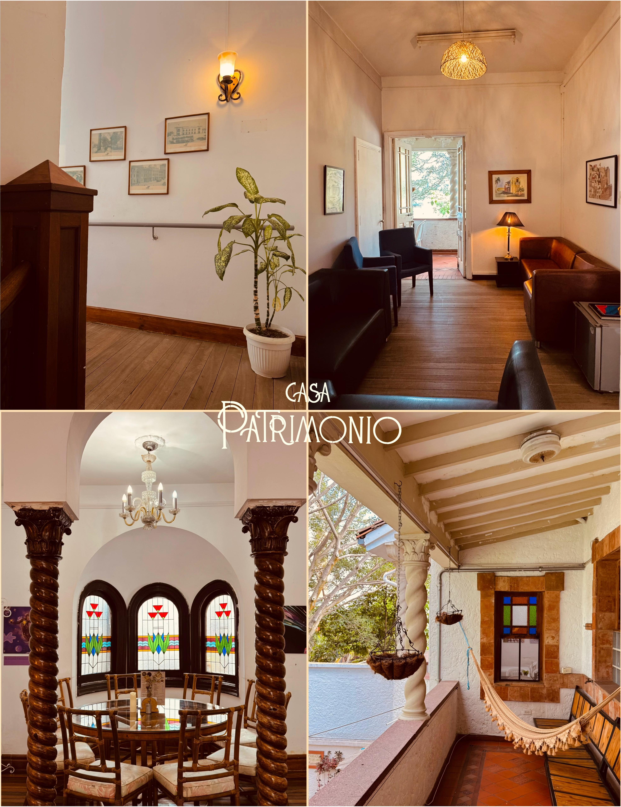
Patrimonio
Arquitectura histórica de Prado
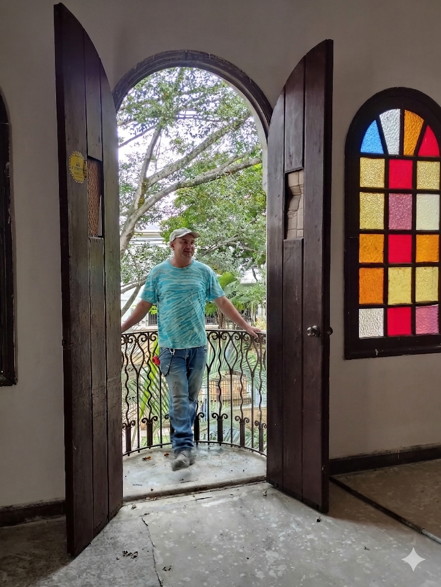
Entrevista
Historias y experiencias del barrio
Con el propósito de comprender las dinámicas y formas de habitar el Barrio Prado Medellín, se realizaron entrevistas a cinco personas con diferentes relaciones frente al territorio, entre ellas residentes, trabajadores del sector, encargados de espacios patrimoniales y personas externas que conocen el barrio desde la experiencia o la percepción construida alrededor de él.
Estas conversaciones permitieron reconocer distintas miradas sobre la transformación de Prado, sus problemáticas actuales y las nuevas dinámicas culturales que hoy continúan dando vida al sector.
Uno de los hallazgos más importantes surgió a partir del relato del encargado de Casa Prado Patrimonio, quien destacó cómo muchas personas observan las fachadas del barrio desde afuera sin conocer las experiencias culturales y dinámicas que actualmente existen dentro de estos espacios.
Asimismo, resaltó la importancia de conservar las viviendas patrimoniales permitiendo que continúen siendo habitadas y adaptadas a nuevos usos culturales y gastronómicos.
Por otro lado, Don Jorge permitió comprender Prado desde una mirada más cotidiana y cercana a la transformación del barrio, resaltando el valor de los materiales, las rejas y los detalles arquitectónicos presentes en muchas de las casas tradicionales.
Las entrevistas realizadas a jóvenes y visitantes evidenciaron una percepción negativa marcada por la inseguridad y la desinformación frente al barrio, generando una desconexión con los espacios culturales, gastronómicos y patrimoniales que actualmente buscan resignificar Prado desde nuevas formas de habitarlo.
Esto permitió reconocer que gran parte de la riqueza del sector permanece oculta detrás de sus fachadas, revelando una oportunidad para construir propuestas capaces de invitar a las personas a entrar, recorrer y redescubrir el territorio desde la experiencia y la permanencia.
Mapa de empatía
Percepción del Barrio Prado
El mapa de empatía permitió comprender cómo diferentes personas perciben y se relacionan con el Barrio Prado Medellín desde experiencias, emociones y necesidades distintas. Mientras algunos actores reconocen su valor patrimonial, arquitectónico y cultural, muchas personas externas aún lo asocian con la inseguridad, el deterioro y el miedo.
Tensiones en la percepción
Esta dualidad genera una barrera que limita el interés por recorrerlo y habitarlo, afectando la forma en que el barrio es imaginado desde fuera.
Oportunidades de conexión
También se evidenció curiosidad por descubrir Prado y sus nuevas dinámicas culturales y gastronómicas, pero existe una falta de información y visibilidad sobre los espacios que buscan resignificar el territorio. Esto sugiere que el usuario no necesita solo información, sino experiencias que generen cercanía, permanencia y conexión con el barrio.
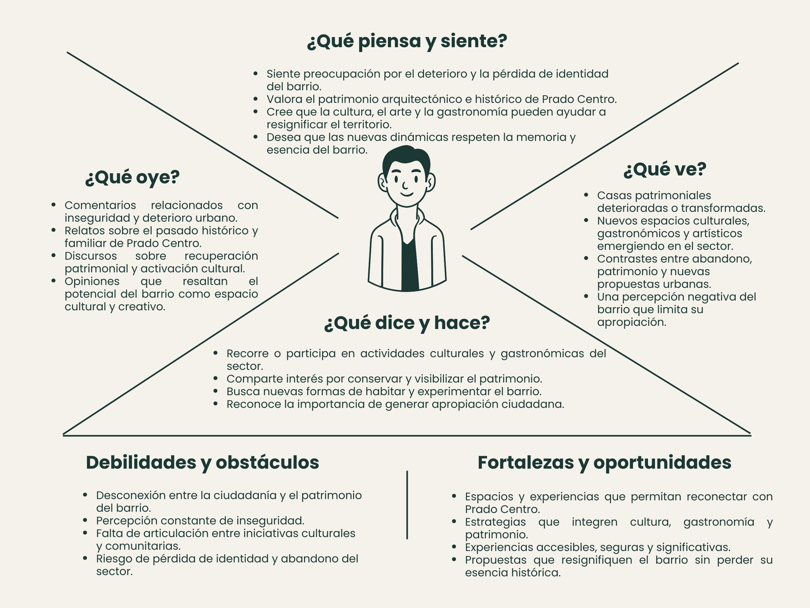
Mapa de Empatía
Análisis de emociones, pensamientos y experiencias
IDEAR
Bocetos
Durante la fase de bocetación se exploraron distintas propuestas visuales para construir la identidad de la marca, tomando como inspiración elementos arquitectónicos presentes en las casas patrimoniales del Barrio Prado Medellín, como arcos, puertas, rejas y ornamentaciones. Asimismo, se utilizaron referencias del Art Nouveau, Art Déco y la arquitectura republicana observada durante la investigación de campo, permitiendo desarrollar una identidad visual conectada con el patrimonio del barrio desde una mirada contemporánea y experiencial.
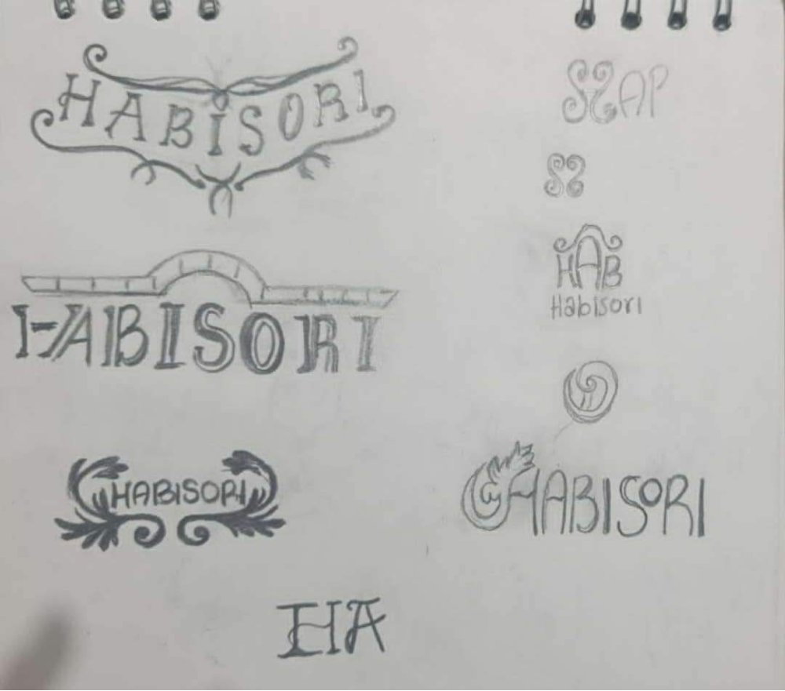
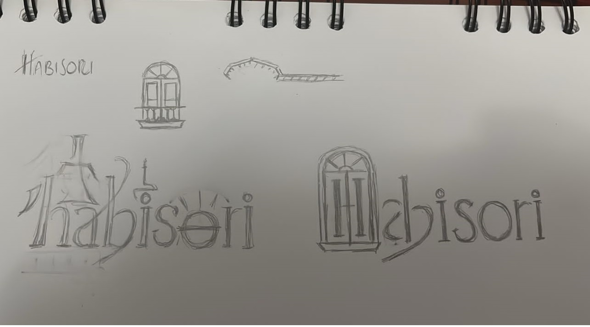
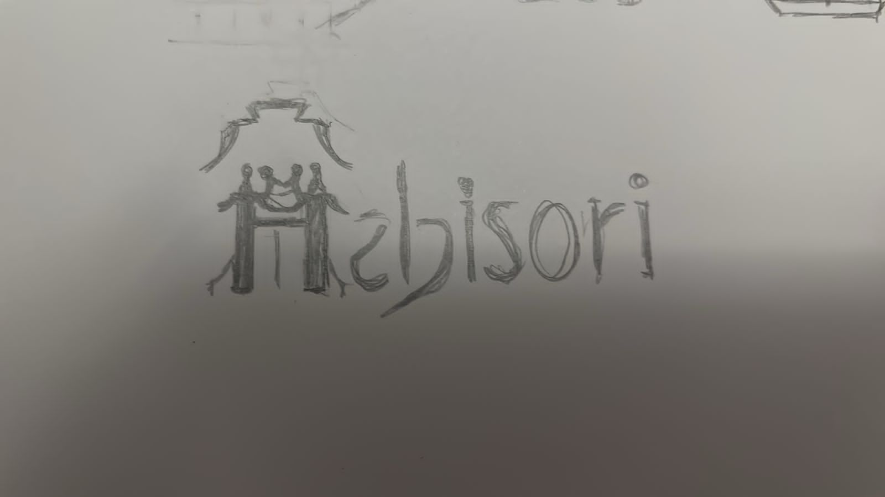
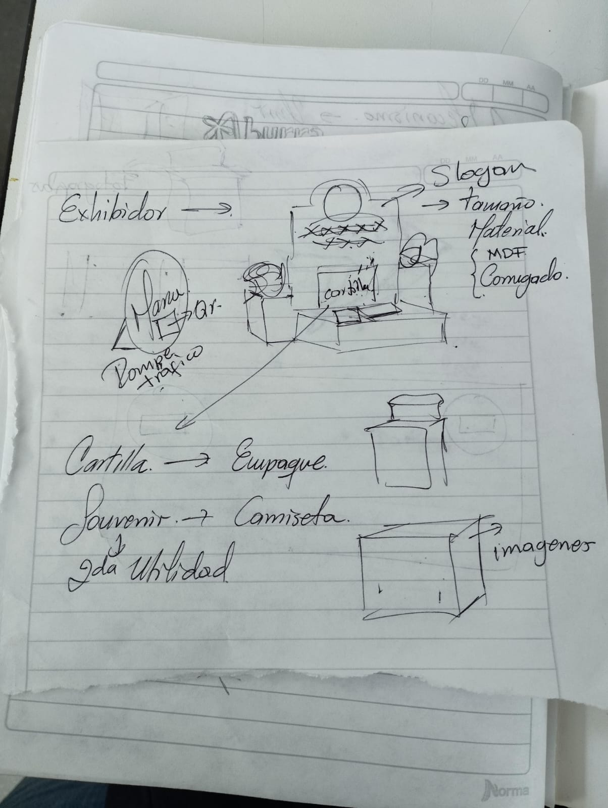
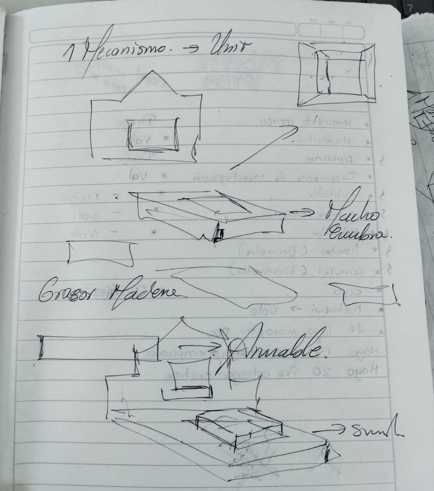
Evaluación de criterios
Requerimientos
Propuesta Logo
Caja Pop-Up
Carrusel de fotos
Malla receptora
+ Qué es interesante
- Uso de arquitectura patrimonial como sistema gráfico.
- Integración entre experiencia y editorial.
- Empaque con doble función.
- Inspiración en elementos reales del barrio.
Δ Críticas constructivas
- Algunos elementos visuales estaban sobrecargados.
- Era necesario simplificar ciertas formas.
- Algunos tamaños afectaban la funcionalidad.
- Algunas estructuras eran difíciles de producir.
? Preguntas y dudas
- ¿Cómo equilibrar lo vintage y lo contemporáneo?
- ¿Qué formato genera una experiencia más habitable?
- ¿Cómo organizar mejor las piezas?
- ¿Qué elementos podían tener doble uso?
- ¿Cómo aumentar el tiempo de permanencia del usuario?
💡 Ideas nuevas
- Carrusel de doble uso.
- Mejor organización interna del kit.
- Sistema editorial interactivo.
- Elementos desplegables inspirados en fachadas.
- Patrones arquitectónicos adaptados a piezas gráficas.
La evaluación de criterios permitió analizar las propuestas desde dimensiones estético-comunicativas, funcional-operativas y tecno-productivas. En los bocetos de identidad visual se evaluaron aspectos como narrativa gráfica, representación patrimonial, legibilidad y aplicación visual, mientras que en las propuestas editoriales y de empaque se revisaron elementos relacionados con organización, experiencia de uso, interacción y viabilidad estructural. Este proceso permitió refinar las ideas y consolidar una propuesta más coherente con el concepto de “Habitar y Saborear”.
DEFINIR
Objetivos de diseño
Objetivo general
Diseñar un producto editorial y experiencial que permita resignificar la percepción del Barrio Prado mediante la integración de la arquitectura, la cultura y la gastronomía, promoviendo su apropiación y habitabilidad por parte del público.
Objetivos específicos
Identificar las percepciones, problemáticas y dinámicas del Barrio Prado a partir del análisis de contexto y entrevistas.
Analizar la interacción entre arquitectura, cultura y gastronomía como ejes de resignificación del territorio.
Definir el concepto como eje articulador del proyecto y traducirlo en un producto tangible.
Desarrollar el sistema gráfico del proyecto incluyendo identidad visual, lenguaje editorial y recursos gráficos.
Evaluar el producto con usuarios potenciales para medir su comprensión, atractivo y capacidad de transformar la percepción del barrio.
Cómo sería...
TRANSFORMADA)
(EXPERIENCIA)
(HABISORI)
(SOLUCIÓN)
Habisori propone habitar el espacio y saborear la experiencia, transformando la percepción del Barrio Prado a través de recorridos que conectan a las personas con su valor cultural y patrimonial.
Concepto seleccionado
HABITAR Y SABOREAR
Habitar y Saborear propone reconocer el Barrio Prado Medellín como un territorio que puede volver a recorrerse y habitarse a través de experiencias culturales, artísticas y gastronómicas. La idea surge de descubrir aquello que existe detrás de las fachadas del barrio, visibilizando espacios donde la arquitectura patrimonial continúa activa mediante nuevas dinámicas que hoy siguen dándole vida al territorio.
PROPÓSITO
- Visibilizar espacios culturales, gastronómicos y patrimoniales del barrio.
- Conectar a las personas con la historia y arquitectura de Prado desde la experiencia.
- Transformar la mirada del barrio como un lugar que puede recorrerse, permanecer y habitarse.
- Generar nuevas formas de conexión entre las personas y el territorio a través del arte, la cultura y la gastronomía.
Criterios de diseño
ESTÉTICO-COMUNICATIVO
- Identidad visual: Se propone un lenguaje gráfico inspirado en el Art Déco.
- Estilo y lenguaje gráfico: Uso de ilustración + fotografía intervenida para resignificar los espacios.
- Narrativa visual: Construir una historia del barrio a través de piezas gráficas.
- Comunicación: Transmitir el valor del patrimonio de forma clara y accesible.
FUNCIONAL-OPERATIVO
- Jerarquía visual: Organización clara de la información para facilitar la lectura.
- Legibilidad y accesibilidad: Uso adecuado de tipografías y contrastes.
- Flujo y navegación: Las piezas (caja pop up, carrusel y libro.) deben guiar al usuario en el recorrido del barrio de forma intuitiva.
- Interacción: Interacción basada en el recorrido, la exploración y el descubrimiento de distintos espacios del Barrio Prado Medellín mediante piezas gráficas, elementos editoriales y códigos QR que permitan acceder a la página web y a los diferentes contenidos investigativos y visuales del proyecto.
TECNO-PRODUCTIVO
- Soporte, software y formato: Desarrollo de piezas físicas y digitales adaptables.
- Viabilidad técnica: Uso de materiales accesibles y funcionales como MDF, cartón corrugado, cartón industrial y papel adhesivo, permitiendo desarrollar piezas viables, resistentes y adaptables para su producción.
- Compatibilidad: Adaptación del diseño a diferentes aplicaciones.
- Optimización de recursos: Aprovechamiento eficiente de materiales y procesos.
Análisis de referentes y Elementos Visuales

PROTOTIPADO Y
VALIDAR
Troquel de caja y empaque de carrusel
La caja mide 32 × 24 cm, con una profundidad de 8 cm, y fue diseñada para contener una carnada, un librito coleccionable y un carrusel de fotos, además de permitir futuras adiciones dentro del sistema editorial.
Caja principal
Librito coleccionable
Diseñado para integrarse visualmente con el sistema gráfico y complementar la experiencia narrativa del proyecto.
Troquel: caja y carrusel


Prototipado
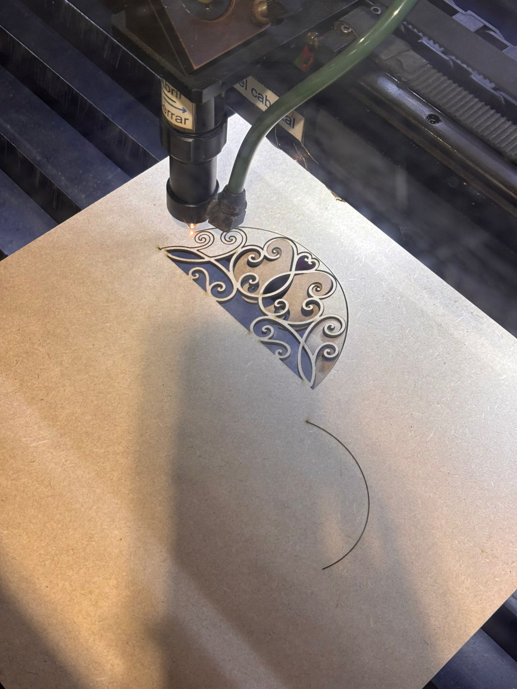
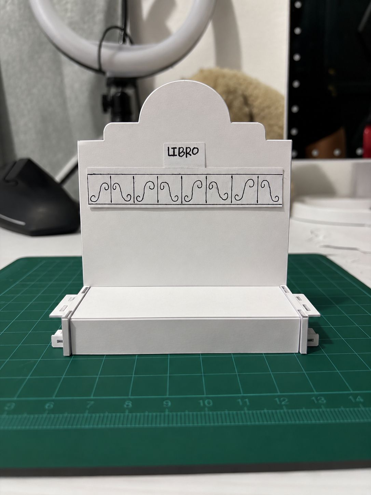
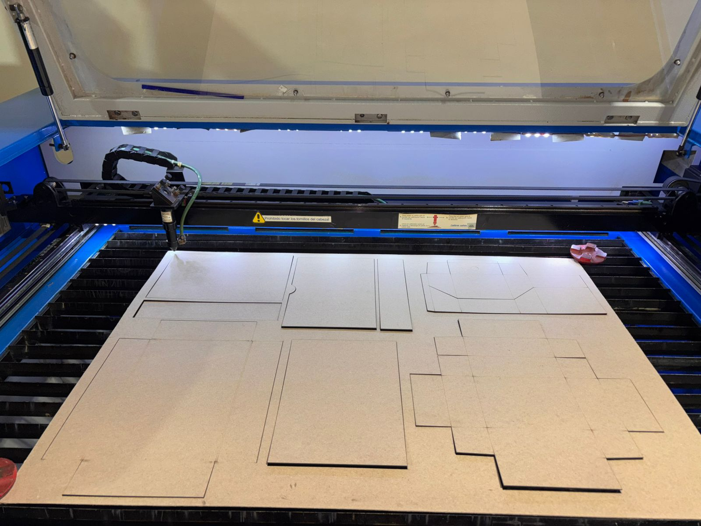
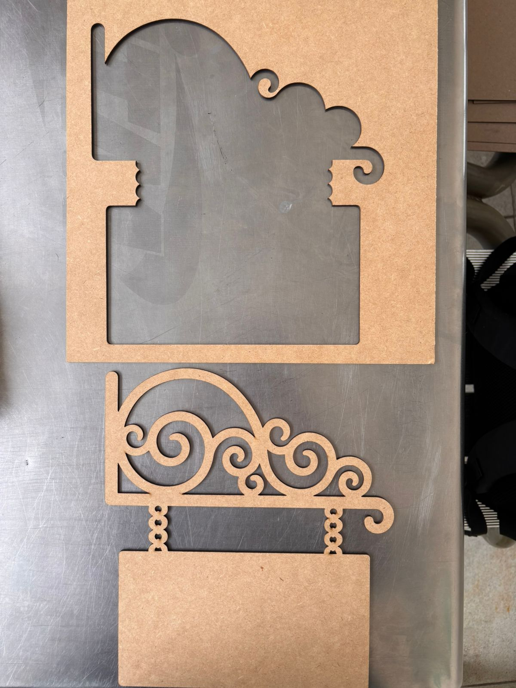
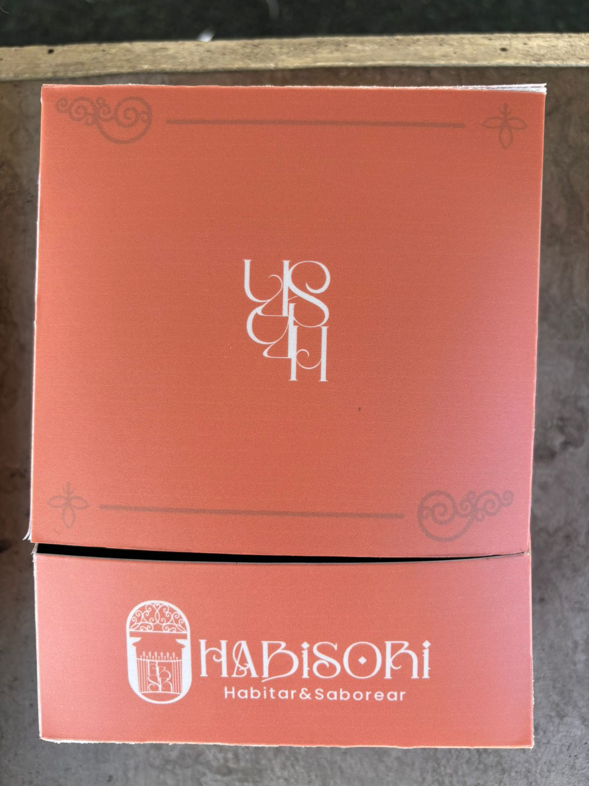
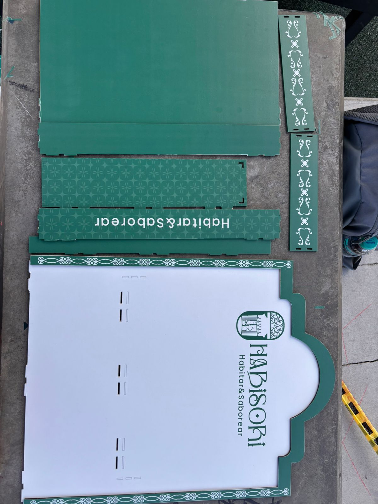
Validación
Impresión, armado y producción
Durante la fase de validación se realizaron pruebas de impresión, armado y producción de las diferentes piezas desarrolladas dentro del proyecto, permitiendo ajustar aspectos relacionados con medidas, materiales, acabados y presentación visual.
Modificaciones en piezas
A partir de estos procesos se realizaron pequeñas modificaciones en piezas como el exhibidor, el carrusel, el librillo y el fanzine, con el propósito de mejorar su funcionamiento, claridad y coherencia visual.
Identidad visual
Asimismo, se validaron elementos como color, tipografías, composición gráfica, concepto y navegabilidad, comprobando que la propuesta mantuviera una identidad visual clara y coherente con la intención de la marca, logrando transmitir una experiencia cercana alrededor del recorrido, la arquitectura y las nuevas formas de habitar el Barrio Prado Medellín.